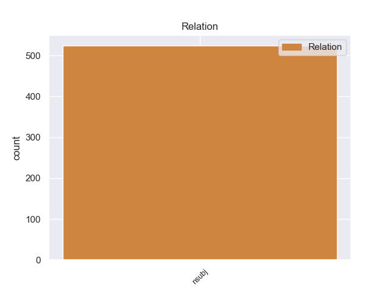
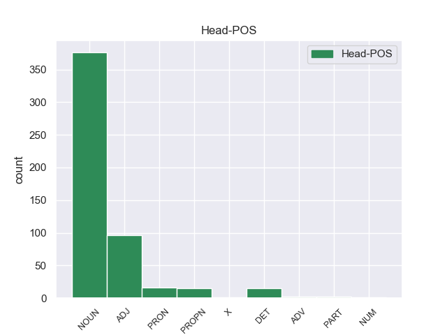
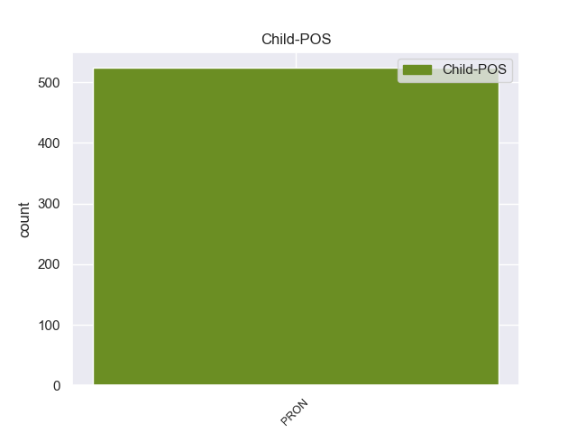

Distribution of features within this leaf



Morphosyntax Rules sorted by frequency.
- When the dependent token is the nominal subject(nsubj) of the head token, and the head token is NOUN and the dependent token is PRON, the Case needs to be Nom.
1 मैं मैं PRON PRP Case=Nom|Number=Sing|Person=1|PronType=Prs 14 nsubj _ ChunkId=NP|ChunkType=head|Tam=0|Translit=maiṁ|Vib=0
2 चीनी _ _ _ _ 0 _ _ _
3 संविधान _ _ _ _ 0 _ _ _
4 के _ _ _ _ 0 _ _ _
5 तहत _ _ _ _ 0 _ _ _
6 ही _ _ _ _ 0 _ _ _
7 तिब्बती _ _ _ _ 0 _ _ _
8 समस्या _ _ _ _ 0 _ _ _
9 का _ _ _ _ 0 _ _ _
10 समाधान _ _ _ _ 0 _ _ _
11 निकाले _ _ _ _ 0 _ _ _
12 जाने _ _ _ _ 0 _ _ _
13 के _ _ _ _ 0 _ _ _
14 पक्ष पक्ष NOUN NN Case=Acc|Gender=Masc|Number=Sing|Person=3 0 _ _ _
15 में _ _ _ _ 0 _ _ _
16 हूं _ _ _ _ 0 _ _ _
17 । _ _ _ _ 0 _ _ _
1 अल्पसंख्यक _ _ _ _ 0 _ _ _
2 आयोग _ _ _ _ 0 _ _ _
3 के _ _ _ _ 0 _ _ _
4 अध्यक्ष _ _ _ _ 0 _ _ _
5 तिरलोचन _ _ _ _ 0 _ _ _
6 सिंह _ _ _ _ 0 _ _ _
7 कहते _ _ _ _ 0 _ _ _
8 हैं _ _ _ _ 0 _ _ _
9 कि _ _ _ _ 0 _ _ _
10 यह यह PRON PRP Case=Nom|Number=Sing|Person=3|PronType=Prs 11 nsubj _ ChunkId=NP4|ChunkType=head|Tam=0|Translit=yaha|Vib=0
11 सही सही ADJ JJ _ 0 _ _ _
12 है _ _ _ _ 0 _ _ _
13 कि _ _ _ _ 0 _ _ _
14 बौद्ध _ _ _ _ 0 _ _ _
15 धर्म _ _ _ _ 0 _ _ _
16 हिंदुस्तान _ _ _ _ 0 _ _ _
17 का _ _ _ _ 0 _ _ _
18 एक _ _ _ _ 0 _ _ _
19 पुरातन _ _ _ _ 0 _ _ _
20 धर्म _ _ _ _ 0 _ _ _
21 है _ _ _ _ 0 _ _ _
22 और _ _ _ _ 0 _ _ _
23 इसके _ _ _ _ 0 _ _ _
24 अनुयायियों _ _ _ _ 0 _ _ _
25 की _ _ _ _ 0 _ _ _
26 संख्या _ _ _ _ 0 _ _ _
27 काफी _ _ _ _ 0 _ _ _
28 तेजी _ _ _ _ 0 _ _ _
29 से _ _ _ _ 0 _ _ _
30 बढ़ _ _ _ _ 0 _ _ _
31 रही _ _ _ _ 0 _ _ _
32 है _ _ _ _ 0 _ _ _
33 लेकिन _ _ _ _ 0 _ _ _
34 अफसोस _ _ _ _ 0 _ _ _
35 की _ _ _ _ 0 _ _ _
36 बात _ _ _ _ 0 _ _ _
37 है _ _ _ _ 0 _ _ _
38 कि _ _ _ _ 0 _ _ _
39 उनके _ _ _ _ 0 _ _ _
40 शिक्षा _ _ _ _ 0 _ _ _
41 , _ _ _ _ 0 _ _ _
42 स्वास्थ्य _ _ _ _ 0 _ _ _
43 , _ _ _ _ 0 _ _ _
44 सामाजिक _ _ _ _ 0 _ _ _
45 विकास _ _ _ _ 0 _ _ _
46 और _ _ _ _ 0 _ _ _
47 बेहतरी _ _ _ _ 0 _ _ _
48 के _ _ _ _ 0 _ _ _
49 लिए _ _ _ _ 0 _ _ _
50 कोई _ _ _ _ 0 _ _ _
51 प्रयास _ _ _ _ 0 _ _ _
52 नहीं _ _ _ _ 0 _ _ _
53 किया _ _ _ _ 0 _ _ _
54 जा _ _ _ _ 0 _ _ _
55 रहा _ _ _ _ 0 _ _ _
56 है _ _ _ _ 0 _ _ _
57 । _ _ _ _ 0 _ _ _
1 पंजाब _ _ _ _ 0 _ _ _
2 में _ _ _ _ 0 _ _ _
3 ३३४ _ _ _ _ 0 _ _ _
4 मिमी _ _ _ _ 0 _ _ _
5 बारिश _ _ _ _ 0 _ _ _
6 हुई _ _ _ _ 0 _ _ _
7 है _ _ _ _ 0 _ _ _
8 जबकि _ _ _ _ 0 _ _ _
9 इस _ _ _ _ 0 _ _ _
10 अवधि _ _ _ _ 0 _ _ _
11 में _ _ _ _ 0 _ _ _
12 ३९४ _ _ _ _ 0 _ _ _
13 मिमी _ _ _ _ 0 _ _ _
14 बारिश _ _ _ _ 0 _ _ _
15 होनी _ _ _ _ 0 _ _ _
16 चाहिए _ _ _ _ 0 _ _ _
17 जो जो PRON PRP Case=Nom|Number=Sing|Person=3|PronType=Prs 22 nsubj _ ChunkId=NP5|ChunkType=head|Tam=0|Translit=jo|Vib=0
18 औसत _ _ _ _ 0 _ _ _
19 से _ _ _ _ 0 _ _ _
20 १६ _ _ _ _ 0 _ _ _
21 फीसदी _ _ _ _ 0 _ _ _
22 कम कम DET QF PronType=Ind 0 _ _ _
23 है _ _ _ _ 0 _ _ _
24 । _ _ _ _ 0 _ _ _
1 नायर _ _ _ _ 0 _ _ _
2 ने _ _ _ _ 0 _ _ _
3 आरोप _ _ _ _ 0 _ _ _
4 लगाया _ _ _ _ 0 _ _ _
5 कि _ _ _ _ 0 _ _ _
6 सोवियत _ _ _ _ 0 _ _ _
7 संघ _ _ _ _ 0 _ _ _
8 के _ _ _ _ 0 _ _ _
9 विघटन _ _ _ _ 0 _ _ _
10 के _ _ _ _ 0 _ _ _
11 बाद _ _ _ _ 0 _ _ _
12 अमेरिका _ _ _ _ 0 _ _ _
13 अपने अपना PRON PRPC Case=Nom|PronType=Prs 14 nsubj _ ChunkId=NP6|ChunkType=child|Tam=0|Translit=apane|Vib=0
14 आप आप PRON PRP Case=Acc|PronType=Prs 0 _ _ _
15 को _ _ _ _ 0 _ _ _
16 दुनिया _ _ _ _ 0 _ _ _
17 का _ _ _ _ 0 _ _ _
18 दादा _ _ _ _ 0 _ _ _
19 समझने _ _ _ _ 0 _ _ _
20 लगा _ _ _ _ 0 _ _ _
21 है _ _ _ _ 0 _ _ _
22 । _ _ _ _ 0 _ _ _
1 जम्मू _ _ _ _ 0 _ _ _
2 - _ _ _ _ 0 _ _ _
3 कश्मीर _ _ _ _ 0 _ _ _
4 पुलिस _ _ _ _ 0 _ _ _
5 द्वारा _ _ _ _ 0 _ _ _
6 भेजी _ _ _ _ 0 _ _ _
7 गई _ _ _ _ 0 _ _ _
8 अश्लील _ _ _ _ 0 _ _ _
9 सीडी _ _ _ _ 0 _ _ _
10 में _ _ _ _ 0 _ _ _
11 जो _ _ _ _ 0 _ _ _
12 लड़की _ _ _ _ 0 _ _ _
13 है _ _ _ _ 0 _ _ _
14 वह वह PRON PRP Case=Nom|Number=Sing|Person=3|PronType=Prs 19 nsubj _ ChunkId=NP4|ChunkType=head|Tam=0|Translit=vaha|Vib=0
15 पूर्व _ _ _ _ 0 _ _ _
16 मिस _ _ _ _ 0 _ _ _
17 जम्मू _ _ _ _ 0 _ _ _
18 अनारा _ _ _ _ 0 _ _ _
19 गुप्ता गुप्ता PROPN NNP Case=Nom|Number=Sing|Person=3 0 _ _ _
20 नहीं _ _ _ _ 0 _ _ _
21 है _ _ _ _ 0 _ _ _
22 । _ _ _ _ 0 _ _ _
1 यहां _ _ _ _ 0 _ _ _
2 न्यूनतम _ _ _ _ 0 _ _ _
3 तापमान _ _ _ _ 0 _ _ _
4 १.२ _ _ _ _ 0 _ _ _
5 डिग्री _ _ _ _ 0 _ _ _
6 सेल्सियस _ _ _ _ 0 _ _ _
7 रिकार्ड _ _ _ _ 0 _ _ _
8 किया _ _ _ _ 0 _ _ _
9 गया _ _ _ _ 0 _ _ _
10 , _ _ _ _ 0 _ _ _
11 जो जो PRON PRP Case=Nom|Number=Sing|Person=3|PronType=Prs 17 nsubj _ ChunkId=NP4|ChunkType=head|Tam=0|Translit=jo|Vib=0
12 सामान्य _ _ _ _ 0 _ _ _
13 स्तर _ _ _ _ 0 _ _ _
14 से _ _ _ _ 0 _ _ _
15 दो _ _ _ _ 0 _ _ _
16 डिग्री _ _ _ _ 0 _ _ _
17 नीचे नीचे ADV NST AdpType=Post|Case=Nom|Gender=Masc|Number=Sing|Person=3 0 _ _ _
18 था _ _ _ _ 0 _ _ _
19 । _ _ _ _ 0 _ _ _
1 राष्ट्रपति _ _ _ _ 0 _ _ _
2 मुशर्रफ _ _ _ _ 0 _ _ _
3 ने _ _ _ _ 0 _ _ _
4 पकड़े _ _ _ _ 0 _ _ _
5 गए _ _ _ _ 0 _ _ _
6 आतंकी _ _ _ _ 0 _ _ _
7 का _ _ _ _ 0 _ _ _
8 नाम _ _ _ _ 0 _ _ _
9 नहीं _ _ _ _ 0 _ _ _
10 बताया _ _ _ _ 0 _ _ _
11 लेकिन _ _ _ _ 0 _ _ _
12 ' _ _ _ _ 0 _ _ _
13 द _ _ _ _ 0 _ _ _
14 पाकिस्तान _ _ _ _ 0 _ _ _
15 अब्जर्वर _ _ _ _ 0 _ _ _
16 ' _ _ _ _ 0 _ _ _
17 नामक _ _ _ _ 0 _ _ _
18 दैनिक _ _ _ _ 0 _ _ _
19 ने _ _ _ _ 0 _ _ _
20 एक _ _ _ _ 0 _ _ _
21 अधिकारी _ _ _ _ 0 _ _ _
22 के _ _ _ _ 0 _ _ _
23 हवाले _ _ _ _ 0 _ _ _
24 से _ _ _ _ 0 _ _ _
25 लिखा _ _ _ _ 0 _ _ _
26 है _ _ _ _ 0 _ _ _
27 कि _ _ _ _ 0 _ _ _
28 यह _ _ _ _ 0 _ _ _
29 और _ _ _ _ 0 _ _ _
30 कोई कोई PRON PRP Case=Nom|Number=Sing|Person=3|PronType=Prs 31 nsubj _ ChunkId=NP8|ChunkType=head|Tam=0|Translit=koī|Vib=0
31 नहीं नहीं PART NEG Polarity=Neg|PronType=Neg 0 _ _ _
32 कुख्यात _ _ _ _ 0 _ _ _
33 अहमद _ _ _ _ 0 _ _ _
34 खलफान _ _ _ _ 0 _ _ _
35 घैलानी _ _ _ _ 0 _ _ _
36 है _ _ _ _ 0 _ _ _
37 । _ _ _ _ 0 _ _ _
1 अगर _ _ _ _ 0 _ _ _
2 कुछ कुछ PRON PRP Case=Nom|Person=3|PronType=Prs 3 nsubj _ ChunkId=NP|ChunkType=head|Tam=0|Translit=kucha|Vib=0
3 ओरिजनल ओरिजनल X UNK Foreign=Yes 0 _ _ _
4 है _ _ _ _ 0 _ _ _
5 तो _ _ _ _ 0 _ _ _
6 पुराने _ _ _ _ 0 _ _ _
7 दिग्गज _ _ _ _ 0 _ _ _
8 फैशन _ _ _ _ 0 _ _ _
9 डिजाइनरों _ _ _ _ 0 _ _ _
10 का _ _ _ _ 0 _ _ _
11 काम _ _ _ _ 0 _ _ _
12 ही _ _ _ _ 0 _ _ _
13 सिर _ _ _ _ 0 _ _ _
14 चढ़कर _ _ _ _ 0 _ _ _
15 बोल _ _ _ _ 0 _ _ _
16 रहा _ _ _ _ 0 _ _ _
17 है _ _ _ _ 0 _ _ _
18 । _ _ _ _ 0 _ _ _
1 राजधानी _ _ _ _ 0 _ _ _
2 के _ _ _ _ 0 _ _ _
3 विज्ञान _ _ _ _ 0 _ _ _
4 भवन _ _ _ _ 0 _ _ _
5 में _ _ _ _ 0 _ _ _
6 विश्व _ _ _ _ 0 _ _ _
7 आतंकवाद _ _ _ _ 0 _ _ _
8 विरोधी _ _ _ _ 0 _ _ _
9 दिवस _ _ _ _ 0 _ _ _
10 के _ _ _ _ 0 _ _ _
11 मौके _ _ _ _ 0 _ _ _
12 पर _ _ _ _ 0 _ _ _
13 आयोजित _ _ _ _ 0 _ _ _
14 समारोह _ _ _ _ 0 _ _ _
15 में _ _ _ _ 0 _ _ _
16 विभिन्न _ _ _ _ 0 _ _ _
17 देशों _ _ _ _ 0 _ _ _
18 के _ _ _ _ 0 _ _ _
19 राजनायिकों _ _ _ _ 0 _ _ _
20 ने _ _ _ _ 0 _ _ _
21 एक _ _ _ _ 0 _ _ _
22 स्वर _ _ _ _ 0 _ _ _
23 में _ _ _ _ 0 _ _ _
24 कहा _ _ _ _ 0 _ _ _
25 कि _ _ _ _ 0 _ _ _
26 आतंकवाद _ _ _ _ 0 _ _ _
27 के _ _ _ _ 0 _ _ _
28 खिलाफ _ _ _ _ 0 _ _ _
29 लड़ाई _ _ _ _ 0 _ _ _
30 में _ _ _ _ 0 _ _ _
31 सब सब PRON PRP Case=Nom|Number=Plur|PronType=Prs 32 nsubj _ ChunkId=NP11|ChunkType=head|Tam=0|Translit=saba|Vib=0
32 एक एक NUM QC NumType=Card 0 _ _ _
33 हैं _ _ _ _ 0 _ _ _
34 । _ _ _ _ 0 _ _ _
non-conforming Examples:
1 मनुष्य _ _ _ _ 0 _ _ _
2 की _ _ _ _ 0 _ _ _
3 गरिमा _ _ _ _ 0 _ _ _
4 के _ _ _ _ 0 _ _ _
5 सम्मान _ _ _ _ 0 _ _ _
6 , _ _ _ _ 0 _ _ _
7 जिसका जो PRON PRP Case=Acc,Gen|Gender=Masc|Number=Sing|Person=3|Poss=Yes|PronType=Prs 11 nsubj _ ChunkId=NP4|ChunkType=head|Tam=kA|Translit=jisakā|Vib=का
8 हमारे _ _ _ _ 0 _ _ _
9 संविधान _ _ _ _ 0 _ _ _
10 में _ _ _ _ 0 _ _ _
11 उल्लेख उल्लेख NOUN NN Case=Nom|Gender=Masc|Number=Sing|Person=3 0 _ _ _
12 है _ _ _ _ 0 _ _ _
13 , _ _ _ _ 0 _ _ _
14 के _ _ _ _ 0 _ _ _
15 दर्शन _ _ _ _ 0 _ _ _
16 यहाँ _ _ _ _ 0 _ _ _
17 होते _ _ _ _ 0 _ _ _
18 हैं _ _ _ _ 0 _ _ _
19 जब _ _ _ _ 0 _ _ _
20 पैदल _ _ _ _ 0 _ _ _
21 चलने _ _ _ _ 0 _ _ _
22 वालों _ _ _ _ 0 _ _ _
23 को _ _ _ _ 0 _ _ _
24 सड़क _ _ _ _ 0 _ _ _
25 पार _ _ _ _ 0 _ _ _
26 करने _ _ _ _ 0 _ _ _
27 के _ _ _ _ 0 _ _ _
28 लिए _ _ _ _ 0 _ _ _
29 प्राथमिकता _ _ _ _ 0 _ _ _
30 दी _ _ _ _ 0 _ _ _
31 जाती _ _ _ _ 0 _ _ _
32 है _ _ _ _ 0 _ _ _
33 व _ _ _ _ 0 _ _ _
34 महँगी _ _ _ _ 0 _ _ _
35 कार _ _ _ _ 0 _ _ _
36 में _ _ _ _ 0 _ _ _
37 बैठा _ _ _ _ 0 _ _ _
38 कोई _ _ _ _ 0 _ _ _
39 बड़ा _ _ _ _ 0 _ _ _
40 उद्योगपति _ _ _ _ 0 _ _ _
41 अपनी _ _ _ _ 0 _ _ _
42 कार _ _ _ _ 0 _ _ _
43 रोके _ _ _ _ 0 _ _ _
44 रखता _ _ _ _ 0 _ _ _
45 है _ _ _ _ 0 _ _ _
46 । _ _ _ _ 0 _ _ _
1 गंगाजल _ _ _ _ 0 _ _ _
2 के _ _ _ _ 0 _ _ _
3 बाद _ _ _ _ 0 _ _ _
4 झा _ _ _ _ 0 _ _ _
5 की _ _ _ _ 0 _ _ _
6 यह _ _ _ _ 0 _ _ _
7 किसी कोई PRON PRP Case=Acc|Number=Sing|Person=3|PronType=Prs 9 nsubj _ ChunkId=NP4|ChunkType=child|Tam=0|Translit=kisī|Vib=0
8 अलग _ _ _ _ 0 _ _ _
9 विषय विषय NOUN NN Case=Acc|Gender=Masc|Number=Sing|Person=3 0 _ _ _
10 पर _ _ _ _ 0 _ _ _
11 बनी _ _ _ _ 0 _ _ _
12 दूसरी _ _ _ _ 0 _ _ _
13 फिल्म _ _ _ _ 0 _ _ _
14 है _ _ _ _ 0 _ _ _
15 । _ _ _ _ 0 _ _ _
1 महोत्सव _ _ _ _ 0 _ _ _
2 की _ _ _ _ 0 _ _ _
3 सुरक्षा _ _ _ _ 0 _ _ _
4 व्यवस्था _ _ _ _ 0 _ _ _
5 को _ _ _ _ 0 _ _ _
6 लेकर _ _ _ _ 0 _ _ _
7 प्रशासन _ _ _ _ 0 _ _ _
8 के _ _ _ _ 0 _ _ _
9 द्वारा _ _ _ _ 0 _ _ _
10 कड़े _ _ _ _ 0 _ _ _
11 इंतजाम _ _ _ _ 0 _ _ _
12 किए _ _ _ _ 0 _ _ _
13 गये _ _ _ _ 0 _ _ _
14 हैं _ _ _ _ 0 _ _ _
15 और _ _ _ _ 0 _ _ _
16 वह _ _ _ _ 0 _ _ _
17 किसी कोई PRON PRP Case=Acc|Number=Sing|Person=3|PronType=Prs 19 nsubj _ ChunkId=NP6|ChunkType=child|Tam=0|Translit=kisī|Vib=0
18 भी _ _ _ _ 0 _ _ _
19 तरह तरह NOUN NN Case=Acc|Gender=Fem|Number=Sing|Person=3 0 _ _ _
20 की _ _ _ _ 0 _ _ _
21 कोताही _ _ _ _ 0 _ _ _
22 नहीं _ _ _ _ 0 _ _ _
23 बरतना _ _ _ _ 0 _ _ _
24 चाहता _ _ _ _ 0 _ _ _
25 । _ _ _ _ 0 _ _ _
1 विशेषज्ञ _ _ _ _ 0 _ _ _
2 कहते _ _ _ _ 0 _ _ _
3 हैं _ _ _ _ 0 _ _ _
4 कि _ _ _ _ 0 _ _ _
5 अगर _ _ _ _ 0 _ _ _
6 स्कॉब _ _ _ _ 0 _ _ _
7 से _ _ _ _ 0 _ _ _
8 प्रभावित _ _ _ _ 0 _ _ _
9 वेब _ _ _ _ 0 _ _ _
10 पेज _ _ _ _ 0 _ _ _
11 को _ _ _ _ 0 _ _ _
12 खोलेंगे _ _ _ _ 0 _ _ _
13 , _ _ _ _ 0 _ _ _
14 तो _ _ _ _ 0 _ _ _
15 आपका _ _ _ _ 0 _ _ _
16 कंप्यूटर _ _ _ _ 0 _ _ _
17 किसी कोई PRON PRP Case=Acc|Number=Sing|Person=3|PronType=Prs 19 nsubj _ ChunkId=NP6|ChunkType=child|Tam=0|Translit=kisī|Vib=0
18 रूसी _ _ _ _ 0 _ _ _
19 वेबसाइट वेबसाइट NOUN NN Case=Acc|Gender=Fem|Number=Sing|Person=3 0 _ _ _
20 से _ _ _ _ 0 _ _ _
21 फाइल _ _ _ _ 0 _ _ _
22 को _ _ _ _ 0 _ _ _
23 डाउनलोड _ _ _ _ 0 _ _ _
24 कर _ _ _ _ 0 _ _ _
25 सकता _ _ _ _ 0 _ _ _
26 है _ _ _ _ 0 _ _ _
27 । _ _ _ _ 0 _ _ _
1 अब _ _ _ _ 0 _ _ _
2 उन्हें _ _ _ _ 0 _ _ _
3 ही _ _ _ _ 0 _ _ _
4 बताना _ _ _ _ 0 _ _ _
5 होगा _ _ _ _ 0 _ _ _
6 कि _ _ _ _ 0 _ _ _
7 क्या _ _ _ _ 0 _ _ _
8 वह _ _ _ _ 0 _ _ _
9 कांग्रेस _ _ _ _ 0 _ _ _
10 में _ _ _ _ 0 _ _ _
11 आने _ _ _ _ 0 _ _ _
12 को _ _ _ _ 0 _ _ _
13 तैयार _ _ _ _ 0 _ _ _
14 हैं _ _ _ _ 0 _ _ _
15 और _ _ _ _ 0 _ _ _
16 उन्हें वह PRON PRP Case=Acc,Dat|Number=Sing|Person=3|Polite=Form|PronType=Prs 19 nsubj _ ChunkId=NP5|ChunkType=head|Tam=ko|Translit=unheṁ|Vib=को
17 हमसे _ _ _ _ 0 _ _ _
18 क्या _ _ _ _ 0 _ _ _
19 उम्मीद उम्मीद NOUN NN Case=Nom|Gender=Fem|Number=Sing|Person=3 0 _ _ _
20 है _ _ _ _ 0 _ _ _
21 ? _ _ _ _ 0 _ _ _